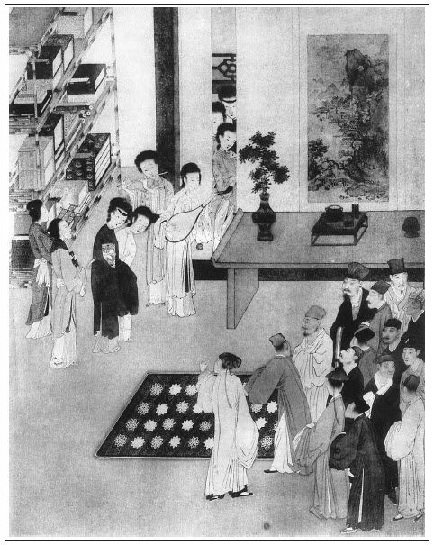

張回上文金、瓶、梅出身已完。此回只該寫「冰鑒定終身」可矣。不知作者故欲曲曲折折，作一書以自娛也。若急急忙忙寫去，匆匆忽忽收煞，則不如勿作之為愈也。故必至二十九回，方以「冰鑒」總鎖住。而二十五回一小小樞紐，先煞一煞也。此回與下回，因上文瓶兒傳中波折大多，一斷文字結不住。故接連又用兩回結之也。
篇內寫玉樓、金蓮，映上文一段，固是束住上文，不知又是為蕙蓮偷期安根也。何則？此回、二十九回，是一氣的文字，內惟講一宋蕙蓮，而蕙蓮偷期，卻是玉簫作牽線者。今看他借金蓮說春梅「干貓兒頭差事」，入一暗筍，接手玉樓陪說蘭香一引，接手即將玉簫提出。蓋此上瓶兒傳已頓住，此下乃放手寫惠蓮，卻恐直出不化，故又借現成鍋灶一引，安下根基。下文即借看房子，將來旺媳婦病，說明在先，隨手結束瓶兒新娶一案，作層次法。下即乃桂姐破綻，引出月娘掃雪；又借月娘掃雪，引出還席；借還席時，以便玉簫作線，蕙蓮蒙愛。文字千曲百曲之妙。手寫此處，卻心覷彼處；因心覷彼處，乃手寫此處。看者不如，乃謂至山洞內方是寫蕙蓮。豈知《金瓶》一書，從無無根之線乎。試看他一部內，凡一人一事，其用筆必不肯隨時突出，處處草蛇灰線，處處你遮我映，無一直筆、呆筆，無一筆不作數十筆用。粗人心知安之！
寫玉簫來，偏能寫月娘早睡。夫新娶一妾，昨夜上吊，今晚西門拿馬鞭入房，月娘為同室之人，乃高枕不問，其與西門上氣，不問可知矣，《金瓶》筆去，每以此等為能。
瓶兒出見眾人一段，總是刺月娘之心目，使奸險之人，再耐不得也。而金蓮如鬼如蜮，挑挨其中，又隱隱伏後文爭寵之線。
內將金蓮妒根，用數語安下。又將瓶兒落套處，一時寫出。使看者不覺心醉，後文欲釋來而不能也。
寫瓶兒來家，請客已完。必總敘得幾樁橫財，又將小廝一敘，此總煞之筆。蓋上文至此，不得不一總；下文脫卸另寫，不得不一總也。
李桂姐，乃玉樓、金蓮、瓶兒襯花樣之人也。看其寫玉樓後，即寫一自院中醉歸，為王婆邀往金蓮處；至娶金蓮後，即寫梳櫳桂姐數段。寫子虛燒靈，又寫桂姐。寫看燈日，又寫桂姐。今瓶兒已來，玉樓、金蓮二人久已來，則襯花樣之人不一冷破，勢必時時照應往院中去。本意借客陪主，卻反致主為客累，奈何不為之敗露哉！蓋恐纏筆費墨，無了休也。而又為娼妓之假，刻骨描寫，為月娘復和作引子。文字之妙，往往不可以一端盡之也。
一百顆明珠，人人知為後一百回作千里照應，不知果解其必用此一百顆明珠何哉？我為之逆其志，乃知作者惟恐後人看他的奇書妙文，不能放眼將一百回通前徹扣看其照應，乃用一百顆明珠，刺入看者心目，見得其一百回乃一線穿采，無一付會易安之筆。而一百回，如一百顆珠，字字圓活。又作者自言，皆是我的妙文，非實有其事也。至於珠必梁中書家帶來，結入月娘夢裡，又見得人自靡常，物非一人可據。今張昔李，俱是空花，不特色本虛無，而百萬金珠變無非幻影也。況梁中書誅，其業亦本非梁中書之物，不知歷千百人而至梁中書之手也。乃無何，粱中書手中之物又入瓶兒之手，瓶兒手中之物扭又入西門之手，且入月娘之手，而月娘夢中，又入雲理守之手。焉知雲理守手中之物，不又歷幾千百人之手，而始遇水遇火，土埋石壓，此珠始同歸於盡哉！乃入梁中書手時，而前千百持珠之人，已煙消雲散，杳無聲形；及入瓶兒手，而梁中書又杳然桃花流水之人矣。子虛勿論，及入西門與月娘之手，而瓶兒又無何紫玉成煙，彩雲易散矣。及入雲理守之手，而西門之墓木可拱，孝哥月娘又齊作夢中人。然則夢中做夢，又必有繼雲理守之手者。噫！一百明珠，作者信手拈來，頭頭是道。固欲為世點醒雙珠，使一顆明珠為一頂門針關捩子也。尋常只以為瓶兒帶來之物，可笑，可笑。
寫西門自瓶兒來後，收拾小廝，是一段；教丫鬟清唱是一段；開舖面又一段，皆是失著處。如買小廝，猶之可以。至於開舖面，乃以金蓮樓上堆藥材，瓶兒樓上堆當物。夫以貯嬌之金屋，作買賣牙行之地，已屬市井不堪。而試想兩婦人居處食息，俱在於此，而一日稱藥尋當，絕不避嫌，其失計為何知？乃絕不計及於此，宜乎有敬濟之蠹暗生於內，而其種種得以生奸者，皆托如尋當物而成。至月娘只破姦情，敬濟猶抱當物而出。然則「弄一得雙」，西門自失計，月娘之罪，又當減等矣。愚人做事，絕不防微杜漸。壞盡天下大事，皆此等處誤之也。
寫西門數失後，又接對敬濟說話一段。見得西門一味托大，不知以禮防閒，為處家者寫一失計之樣也。其數失處，又作伏數段針線：買小廝，伏後文做官；教丫鬟清唱，伏春梅正色一段；解當，伏平安、吳典恩一段；堆藥材，伏「弄一得雙」一段；囑敬濟，則又總照後文。而百忙中，又為西門臨死一言作遙對，見其至死不知敬濟之為人。總之，愚而不讀書處也。
詞曰：
步花徑，闌干狹。防人覷，常驚嚇。荊刺抓裙釵，倒閃在荼䕷架。
勾引嫩枝咿啞，討歸路，尋空罅，被舊家巢燕，引入窗紗。
──右調《歸洞仙》

話說西門慶在房中，被李瓶兒柔情軟語，繡眉四字銷盡古今多少英雄氣骨。感觸的回嗔作喜，拉他起來，穿上衣裳，兩個相摟相抱，極盡綢繆。一面令春梅進房放桌兒，往後邊取酒去。
且說金蓮和玉樓，從西門慶進他房中去，站在角門首張夾角門，一。竊聽消息。他這邊又閉著，止春梅一人在院子裡伺候。金蓮同玉樓兩個打門縫兒往裡張覷，張夾門縫，二。只見房中掌著燈燭，裡邊說話，都聽不見。金蓮道：「俺到不如春梅賊小肉兒，他倒聽的伶俐。」那春梅在窗下潛聽了一回，張夾春梅也是聽。故妙。又走過來。金蓮悄問他房中怎的動靜，春梅便隔門告訴與二人說：張夾隔門，三。「俺爹怎的教他脫衣裳跪著，他不脫。爹惱了，抽了他幾馬鞭子。」金蓮道：「打了他，他脫了不曾？」春梅道：「他見爹惱了，才慌了，就脫了衣裳，跪在地平上。爹如今問他話哩。」張夾此時乃尚未抱起之時。一手寫兩處，妙妙。玉樓恐怕西門慶聽見，便道：「五姐，咱過那邊去罷。」繡旁寫出玉樓膽小。拉金蓮來西角門首。張夾西角門，四。此時是八月二十頭，月色才上來。兩個站立在黑頭裡，一處說話，等著春梅出來問他話。潘金蓮向玉樓道：「我的姐姐，只說好食果子，一心只要來這裡。頭兒沒過動，下馬威早討了這幾下在身上。俺這個好不順臉的貨兒，你若順順兒他倒罷了。屬扭孤兒糖的，你扭扭兒也是錢，不扭也是錢。想著先前吃小婦奴才壓枉造舌，我陪下十二分小心，還吃他奈何得我那等哭哩。姐姐，你來了幾時，還不知他性格哩！」張夾黑妒婦，必如此，他方暢也。
二人正說話之間，只聽開的角門響，張夾角門響，五。春梅出來，一直逕往後邊走。不防他娘站在黑影處叫他，問道：「小肉兒，那去？」春梅笑著只顧走。繡旁畫。金蓮道：「怪小肉兒，你過來，我問你話。慌走怎的？」那春梅方才立住了腳，方說：「他哭著對俺爹說了許多話。爹喜歡抱起他來，令他穿上衣裳，教我放了桌兒，如今往後邊取酒去。」金蓮聽了，向玉樓說道：「賊沒廉恥的貨！頭裡那等雷聲大雨點小，打哩亂哩。張夾如聞其聲。及到其間，也不怎麼的。張夾寫刻薄嫉妒如畫。我猜也沒的想，管情取了酒來，教他遞。繡旁又從經歷處著想，妙甚。賊小肉兒，沒他房裡丫頭？你替他取酒去！到後邊，又叫雪娥那小婦奴才𣭈聲浪顙，繡旁觸起舊恨。張夾為馬鞭想起也。我又聽不上。」春梅道：「爹使我，管我事！」於是笑嘻嘻去了。金蓮道：「俺這小肉兒，正經使著他，死了一般懶待動旦。繡旁又為春梅洗髮。若干貓兒頭差事，鑽頭覓縫干辦了要去，去的那快！現他房裡兩個丫頭，你替他走，管你腿事！『賣蘿蔔的跟著鹽擔子走──好個閒嘈心的小肉兒』！」玉樓道：「可不怎的！俺大丫頭蘭香，我正使他做活兒，他便有要沒緊的。爹使他行鬼頭兒，聽人的話兒，你看他走的那快！」張夾蓋為下蕙蓮，用玉蕭作線一引也。故下即接玉簫可知。
正說著，只見玉簫自後邊驀地走來，張夾不然，想玉簫來此為何。便道：「三娘還在這裡？我來接你來了。」玉樓道：「怪狗肉，諕我一跳！」繡旁又映膽小。張夾寫玉樓所以獨不受辱，在此也。因問：「你娘知道你來不曾？」玉簫道：「我打發娘睡下這一日了，張夾寫月娘使氣也。我來前邊瞧瞧，剛才看見春梅後邊要酒果去了。」因問：「俺爹到他屋裡，怎樣個動靜兒？」金蓮接過來伸著手道：「進他屋裡去，齊頭故事。」繡旁妙語。張夾真刀刀見血之文。玉簫又問玉樓，玉樓便一一對他說。玉簫道：「三娘，真個教他脫了衣裳跪著，打了他五馬鞭子來？」玉樓道：「你爹因他不跪，才打他。」玉簫道：「帶著衣服打來，去了衣裳打來？虧他那瑩白的皮肉兒上怎麼挨得？」繡眉癡丫頭問語，酷肖。張夾反襯西門行徑不堪也。玉樓笑道：「怪小狗肉兒，你倒替古人耽憂！」正說著，只見春梅拿著酒，小玉拿著方盒，逕往李瓶兒那邊去。金蓮道：「賊小肉兒，不知怎的，聽見干恁勾當兒，『雲端裡老鼠──天生的耗』。」吩咐：「快送了來，教他家丫頭伺候去。你不要管他，我要使你哩！」那春梅笑嘻嘻同小玉進去了。一面把酒菜擺在桌上，就出來了，只是繡春、迎春在房答應。玉樓、金蓮問了他話。玉簫道：「三娘，咱後邊去罷。」二人一路去了。金蓮叫春梅關上角門，歸進房來，張夾角門，六。獨自宿歇，不在話下。張夾玉樓、金蓮在門外，春梅在門內，忽入一玉簫，又入一小玉，而玉簫、玉樓同去，金梅同歇。文字絕不板。正是：
可惜團圓今夜月，清光咫尺別人圓。
不說金蓮獨宿，單表西門慶與李瓶兒兩個相憐相愛，飲酒說話到半夜，方才被伸翡翠，枕設鴛鴦，上床就寢。燈光掩映，不啻鏡中鸞鳳和鳴；香氣薰籠，好似花間蝴蝶對舞。
正是：
今宵勝把銀缸照，只恐相逢是夢中。
有詞為證：
淡畫眉兒斜插梳，不忻拈弄倩工夫。雲窗霧閣深深許，蕙性蘭心款款呼。相憐愛，倩人扶，神仙標格世間無。從今罷卻相思調，美滿恩情錦不如。
兩個睡到次日飯時。李瓶兒恰待起來臨鏡梳頭，只見迎春後邊拿將飯來。婦人先漱了口，陪西門慶吃了半盞兒，又教迎春：「將昨日剩的金華酒篩來。」拿甌子陪著西門慶每人吃了兩甌子，張夾步步寫瓶兒好酒。又三杯說合之食意也。方才洗臉梳妝。一面開箱子，打點細軟首飾衣服，與西門慶過目。拿出一百顆西洋珠子繡旁應。張夾為一百回作線，余詳批卷首。與西門慶看，原是昔日梁中書家帶來之物。又拿出一件金鑲鴉青帽頂子，說是過世老公公的。起下來上等子秤，四錢八分重。李瓶兒教西門慶拿與銀匠，替他做一對墜子。又拿出一頂金絲䯼髻，重九兩。因問西門慶：「上房他大娘眾人，有這䯼髻沒有？」西門慶道：「他們銀絲䯼髻倒有兩三頂，只沒編這䯼髻。」繡旁口角妙甚。張夾寫西門心口如畫。婦人道：「我不好戴出來的。你替我拿到銀匠家毀了，打一件金九鳳墊根兒，每個鳳嘴銜一溜珠兒，剩下的再替我打一件，照依他大娘正面戴的金鑲玉觀音滿池嬌分心。」西門慶收了，一面梳頭洗臉，穿了衣服出門。李瓶兒又說道：「那邊房裡沒人，你好歹委付個人兒看守，替了小廝天福兒來家使喚。那老馮老行貨子，啻啻磕磕的，獨自在那裡，我又不放心。」西門慶道：「我知道了。」袖著䯼髻和帽頂子，一直往外走。不妨金蓮鬅著頭，站在東角門首，繡旁偏有心。張夾上文西角門，此又出東角門。金、瓶二人，才合一處，故為分清也。角門，七。一鬅頭，其一夜無眠，妒心可知矣。叫道：「哥，你往那去？這咱才出來？」繡眉忽又播弄一番，風情無限。西門慶道：「我有勾當去。」婦人道：「怪行貨子，慌走怎的？我和你說話。」那西門慶見他叫的緊，只得回來。被婦人引到房中，婦人便坐在椅子上，把他兩隻手拉著說道：張夾寫影追魂。「我不好罵出來的，怪火燎腿三寸貨，那個拿長鍋鑊吃了你！慌往外搶的是些甚的？你過來，我且問你。」西門慶道：「罷麼，小淫婦兒，只顧問甚麼！我有勾當哩，等我回來說。」說著，往外走。婦人摸見袖子裡重重的，繡旁偏細密。道：「是甚麼？拿出來我瞧瞧。」西門慶道：「是我的銀子包。」繡旁瞞得妙。婦人不信，伸手進袖子裡就掏，掏出一頂金絲䯼髻來，說道：「這是他的䯼髻，繡旁偏認得。你拿那去？」西門慶道：「他問我，知你每沒有，說不好戴的，教我到銀匠家替他毀了，打兩件頭面戴。」金蓮問道：「這䯼髻多少重？他要打甚麼？」西門慶道：「這䯼髻重九兩，他要打一件九鳳甸兒，一件照依上房娘的正面那一件玉觀音滿池嬌分心。」金蓮道：「一件九鳳甸兒，滿破使了三兩五六錢金子夠了。繡旁偏曉得。大姐姐那件分心，我秤只重一兩六錢，繡旁偏記得。把剩下的，好歹你替我照依他也打一件九鳳甸兒。」張夾為「托夢」一回作因。西門慶道：「滿池嬌他要揭實枝梗的。」金蓮道：「就是揭實枝梗，使了三兩金子滿頂了。還落他二三兩金子，繡旁偏會算。勾打個甸兒了。」西門慶笑罵道：「你這小淫婦兒！單管愛小便宜兒，隨處也捏個尖兒。」金蓮道：「我兒，娘說的話，你好歹記著。你不替我打將來，我和你答話！」那西門慶袖了䯼髻，笑著出門。金蓮戲道：「哥兒，你幹上了。」西門慶道：「我怎的幹上了？」金蓮道：「你既不幹上，昨日那等雷聲大雨點小，要打著教他上吊。今日拿出一頂䯼髻來，使的你狗油嘴鬼推磨，不怕你不走。」繡眉一味嘴不讓人，使人愛，亦使人憎。西門慶笑道：「這小淫婦兒，單只管胡說！」說著往外去了。
卻說吳月娘和孟玉樓、李嬌兒在房中坐的，忽聽見外邊小廝一片聲尋來旺兒，尋不著。只見平安來掀簾子，月娘便問：「尋他做甚麼？」平安道：「爹緊等著哩。」月娘半日才說：「我使他有勾當去了。」原來月娘早晨吩咐下他，往王姑子庵裡送香油白米去了。張夾月娘好佛，卻從此映出。平安道：「小的回爹，只說娘使他有勾當去了。」月娘罵道：「怪奴才，隨你怎麼回去！」平安慌的不敢言語，往外走了。繡眉二人不說話合氣情景，偏在沒要沒緊處畫出。月娘便向玉樓眾人說道：「我開口，又說我多管。不言語，我又憋的慌。一個人也拉剌將來了，張夾映前寄放之物。那房子賣掉了就是了。平白扯淡，搖鈴打鼓的，看守甚麼？左右有他家馮媽媽子，再派一個沒老婆的小廝，同在那裡就是了，怕走了那房子也怎的？巴巴叫來旺兩口子去！他媳婦子七病八痛，繡旁伏宋蕙蓮。一時病倒了在那裡，誰扶侍他？」玉樓道：「姐姐在上，不該我說。你是個一家之主，不爭你與他爹兩個不說話，就是俺們不好主張的，下邊孩子每也沒投奔。他爹這兩日隔二騙三的，也甚是沒意思。姐姐依俺每一句話兒，與他爹笑開了罷。」月娘道：「孟三姐，你休要起這個意。我又不曾和他兩個嚷鬧，他平白的使性兒。那怕他使的那臉ぅ，休想我正眼看他一眼兒！他背地對人罵我不賢良的淫婦，我怎的不賢良？如今聳七八個在屋裡，才知道我不賢良！自古道，順情說好話，干直惹人嫌。我當初說著攔你，也只為好來。你既收了他許多東西，又買他房子，張夾止為收他東西，買他的房子，才不得不娶他。否則，東西算那一本帳？月娘可惡在此。今日又圖謀他老婆，就著官兒也看喬了。何況他孝服不滿，你不好娶他的。誰知道人在背地裡把圈套做的成成的，每日行茶過水，只瞞我一個兒，把我合在缸底下。今日也推在院裡歇，明日也推在院裡歇，誰想他只當把個人兒歇了家裡來，端的好在院裡歇！他自吃人在他跟前那等花麗狐哨，喬龍畫虎的，繡旁明指金蓮。兩面刀哄他，就是千好萬好了。似俺每這等依老實，苦口良言，著他理你理兒！你不理我，我想求你？一日不少我三頓飯，我只當沒漢子，守寡張夾豈婦人忍出諸口者？在這裡。繡眉月娘與西門慶相好時何等賢慧，今稍冷落，便有許多牢騷不平之言。可見處敗局、冷局之難。隨我去，你每不要管他。」幾句話說的玉樓眾人訕訕的。
良久，只見李瓶兒梳妝打扮，上穿大紅遍地金對襟羅衫兒，翠蓋拖泥妝花羅裙，迎春抱著銀湯瓶，繡春拿著茶盒，走來上房，與月娘眾人遞茶。月娘叫小玉安放座兒與他坐。落後孫雪娥也來到，都遞了茶，一處坐地。潘金蓮嘴快，便叫道：「李大姐，你過來，與大姐姐下個禮兒。實和你說了罷，大姐姐和他爹好些時不說話，都為你來！俺每剛才替你勸了恁一日。你改日安排一席酒兒，央及央及大姐姐，教他兩個老公婆笑開了罷。」李瓶兒道：「姐姐吩咐，奴知道。」於是向月娘面前插燭也似磕了四個頭。月娘道：「李大姐，他哄你哩。」又道：「五姐，你每不要來攛掇。我已是賭下誓，就是一百年也不和他在一答兒哩。」以此眾人再不敢復言。金蓮在旁拿把抿子與李瓶兒抿頭，見他頭上戴著一副金玲瓏草蟲兒頭面，並金累絲松竹梅歲寒三友梳背兒，因說道：「李大姐，你不該打這碎草蟲頭面，有些抓頭髮，不如大姐姐戴的金觀音滿池嬌，張旁味尖。是揭實枝梗的好。」繡旁尖甚。這李瓶兒老實，就說道：「奴也照樣兒要教銀匠打恁一件哩！」落後小玉、玉簫來遞茶，都亂戲他。先是玉簫問道：「六娘，你家老公公當初在皇城內那衙門來？」李瓶兒道：「先在惜薪司掌廠。」玉簫笑道：「嗔道你老人家昨日挨得好柴！」小玉又道：「去年許多里長老人，好不尋你，教你往東京去。」婦人不省，說道：「他尋我怎的？」小玉笑道：「他說你老人家會告的好水災。」玉簫又道：「你老人家鄉裡媽媽拜千佛，昨日磕頭磕夠了。」小玉又說道：「昨日朝廷差四個夜不收，請你往口外和番，端的有這話麼？」李瓶兒道：「我不知道。」小玉笑道：「說你老人家會叫的好達達！」把玉樓、金蓮笑的不了。月娘罵道：「怪臭肉每，幹你那營生去，只顧奚落他怎的？」於是把個李瓶兒羞的臉上一塊紅、一塊白，站又站不得，坐又坐不住，繡旁虧瓶兒禁得起。半日回房去了。
良久，西門慶進房來，回他雇銀匠家打造生活。就計較發柬，二十五日請官客吃會親酒，少不的請請花大哥。李瓶兒道：「他娘子三日來，再三說了。也罷，你請他請罷。」李瓶兒又說：「那邊房子左右有老馮看守，你這裡再教一個和天福兒輪著上宿就是，不消叫旺官去罷。上房姐姐說，他媳婦兒有病，去不的。」繡眉又急急挽回，是瓶兒之為人。若金蓮則定要來旺去矣。西門慶道：「我不知道。」即叫平安，吩咐：「你和天福兒兩個輪，一遞一日，獅子街房子裡上宿。」不在言表。
不覺到二十五日，西門慶家中吃會親酒，安排插花筵席，一起雜耍步戲。四個唱的，李桂姐、吳銀兒、董玉仙、韓金釧兒，從晌午就來了。官客在卷棚內吃了茶，等到齊了，然後大廳上坐席。頭一席花大舅、張夾稱謂奇極，強如割子由之頭。吳大舅；第二席吳二舅、沈姨夫；第三席應伯爵、謝希大；第四席祝實念、孫天化；第五席常峙節、吳典恩；第六席雲理守、白賚光。西門慶主位，張旁以上十兄弟皆到，特為子虛一痛也。其餘傅自新、賁第傳、女婿陳敬濟兩邊列坐。樂人撮弄雜耍數回，就是笑樂院本。下去，李銘、吳惠兩個小優上來彈唱，間著清吹。下去，四個唱的出來，筵外遞酒。應伯爵在席上先開言說道：「今日哥的喜酒，是兄弟不當斗膽，請新嫂子出來拜見拜見，足見親厚之情。俺每不打緊，花大尊親，張夾奇絕。並二位老舅、沈姨丈在上，今日為何來？」西門慶道：「小妾醜陋，不堪拜見，免了罷。」謝希大道：「哥，這話難說。當初有言在先，不為嫂子，俺每怎麼兒來？何況見有我尊親花大哥在上張夾不倫不次。奇絕。，先做友，後做親，張眉直刺「熱潔」一回。張夾此句更妙。又不同別人。請出來見見怕怎的？」西門慶笑不動身。應伯爵道：「哥，你不要笑，俺每都拿著拜見錢在這裡，不白教他出來見。」西門慶道：「你這狗才，單管胡說。」吃他再三逼迫不過，叫過玳安來，教他後邊說去。半日，玳安出來回說：「六娘道，免了罷。」應伯爵道：「就是你這小狗骨禿兒的鬼！你幾時往後邊去，就來哄我？」玳安道：「小的莫不哄應二爹！二爹進去問不是？」伯爵道：「你量我不敢進去？左右花園中熟徑，好不好我走進去，連你那幾位娘都拉了出來。」玳安道：「俺家那大猱獅狗，好不利害。倒沒有把應二爹下半截撕下來。」張夾可兒。伯爵故意下席，趕著玳安踢兩腳，笑道：「好小狗骨禿兒，你傷的我好！趁早與我後邊請去。請不將來，打二十欄杆。」把眾人、四個唱的都笑了。玳安走到下邊立著，把眼只看著他爹不動身。張夾可兒。西門慶無法可處，只得叫過玳安近前，吩咐：「對你六娘說，收拾了出來見見罷。」那玳安去了半日出來，復請了西門慶進去。然後才把腳下人趕出去，關上儀門。孟玉樓、潘金蓮百方攛掇，替他抿頭，戴花翠，打發他出來。廳上鋪下錦氈繡毯，四個唱的，都到後邊彈樂器，導引前行。麝蘭靉靆，絲竹和鳴。婦人身穿大紅五彩通袖羅袍，下著金枝線葉沙綠百花裙，腰裡束著碧玉女帶，腕上籠著金壓袖。胸前纓落繽紛，裙邊環珮叮噹，頭上珠翠堆盈，鬢畔寶釵半卸，粉面宜貼翠花鈿，湘裙越顯紅鴛小。正是：
恍似姮嫦離月殿，猶如神女到筵前。
當下四個唱的，琵琶箏弦，簇擁婦人，花枝招颭，繡帶飄搖，望上朝拜。慌的眾人都下席來，還禮不迭。
卻說孟玉樓、潘金蓮、李嬌兒簇擁著月娘都在大廳軟壁後聽覷，聽見唱「喜得功名遂」，唱到「天之配合一對兒，如鸞似鳳」，直至「永團圓，世世夫妻」。金蓮向月娘說道：「大姐姐，你聽唱的！小老婆今日不該唱這一套，繡旁輸身跌妙。他做了一對魚水團圓，世世夫妻，把姐姐放到那裡？」繡眉從曲中挑撥，又聰明，又微冷。那月娘雖故好性兒，聽了這兩句，未免有幾分惱在心頭。又見應伯爵、謝希大這夥人，見李瓶兒出來上拜，恨不得生出幾個口來誇獎奉承，說道：「我這嫂子，端的寰中少有，蓋世無雙！休說德性溫良，舉止沉重，自這一表人物，普天之下，也尋不出來。那裡有哥這樣大福？俺每今日得見嫂子一面，明日死也得好處。」繡眉一班花面口角，妙甚。張夾奇絕。然天下確有此厚臉人。因喚玳安兒：「快請你娘回房裡，只怕勞動著，倒值了多的。」吳月娘眾人聽了，罵扯淡輕嘴的囚根子不絕。張夾描神。良久，李瓶兒下來。四個唱的見他手裡有錢，都亂趨奉著他，娘長娘短，替他拾花翠，疊衣裳，無所不至。
月娘歸房，甚是不樂。只見玳安、平安接了許多拜錢，也有尺頭、衣服並人情禮，盒子盛著，拿到月娘房裡。月娘正眼也不看，罵道：「賊囚根子！拿送到前頭就是了，平白拿到我房裡來做甚麼？」玳安道：「爹吩咐拿到娘房裡來。」繡旁猶正景。月娘叫玉簫接了，掠在床上去。不一時，吳大舅吃了第二道湯飯，走進後邊來見月娘。月娘見他哥進房來，連忙與他哥哥行禮畢，坐下。吳大舅道：「昨日你嫂子在這裡打攪，又多謝姐夫送了桌面去。到家對我說，你與姐夫兩下不說話。我執著要來勸你，不想姐夫今日又請。姐姐，你若這等，把你從前一場好都沒了。自古癡人畏婦，賢女畏夫。三從四德，乃婦道之常。今後他行的事，你休要攔他，料姐夫他也不肯差了。落的做好好先生，才顯出你賢德來。」繡眉夫妻之間，大倫所繫，乃以好好先生為賢德，可勝歎息。月娘道：「早賢德好來，不教人這般憎嫌。他有了他富貴的姐姐，把我這窮官兒家丫頭，只當忘故了的算帳。你也不要管他，左右是我，隨他把我怎麼的罷！賊強人，張夾全無邪意。從幾時這等變心來？」說著，月娘就哭了。吳大舅道：「姐姐，你這個就差了。你我不是那等人家，快休如此。你兩口兒好好的，俺每走來也有光輝些！」繡眉此數語必不可少，不然則與路人何異？勸月娘一回。小玉拿茶來。吃畢茶，只見前邊使小廝來請，吳大舅便作辭月娘出來。當下眾人吃至掌燈以後，就起身散了。四個唱的，李瓶兒每人都是一方銷金汗巾兒，五錢銀子，歡喜回家。自此西門慶連在瓶兒房裡歇了數夜。張旁金蓮惱處在此。別人都罷了，只有潘金蓮惱的要不的，背地唆調吳月娘與李瓶兒合氣。對著李瓶兒，又說月娘容不的人。李瓶兒尚不知墮他計中，每以姐姐呼之，與他親厚尤密。張夾輕輕一提。正是：
逢人且說三分話，未可全拋一片心。
西門慶自娶李瓶兒過門，又兼得了兩三場橫財，家道營盛，外莊內宅，煥然一新。米麥陳倉，騾馬成群，奴僕成行。把李瓶兒帶來小廝天福兒，改名琴童。又買了兩個小廝，一名來安兒，一名棋童兒。把金蓮房中春梅、上房玉簫、李瓶兒房中迎春、玉樓房中蘭香，一般兒四個丫頭，衣服首飾妝束起來，在前廳西廂房，教李嬌兒兄弟樂工李銘來家，教演習學彈唱。繡眉富便奢侈，此見一斑。春梅琵琶，玉簫學箏，迎春學弦子，蘭香學胡琴。每日三茶六飯，管待李銘，一月與他五兩銀子。又打開門面兩間，兌出二千兩銀子來，委傅夥計、賁第傳開解當鋪。女婿陳敬濟只掌鑰匙，出入尋討。賁第傳只寫帳目，秤發貨物。傅夥計便督理生藥、解當兩個鋪子，看銀色，做買賣。潘金蓮這邊樓上，堆放生藥。李瓶兒那邊樓上，廂成架子，擱解當庫衣服、首飾、古董、書畫、玩好之物。一日也當許多銀子出門。
陳敬濟每日起早睡遲，帶著鑰匙，同夥計查點出入銀錢，收放寫算皆精。西門慶見了，喜歡的要不的。一日在前廳與他同桌兒吃飯，說道：「姐夫，你在我家這等會做買賣，就是你父親在東京知道，他也心安，我也得托了。常言道：有兒靠兒，無兒靠婿。我若久後沒出，這分兒家當，都是你兩口兒的。」繡眉數語往往釀成大禍。張夾誤事儘是自己。敬濟放膽為奸，亦是此二句成之。那敬濟說道：「兒子不幸，家遭官事，父母遠離，投在爹娘這裡。蒙爹娘抬舉，莫大之恩，生死難報。只是兒子年幼，不知好歹，望爹娘耽待便了，豈敢非望。」西門慶聽見他說話兒聰明乖覺，越發滿心歡喜。但凡家中大小事務、出入書柬、禮帖，都教他寫。但凡客人到，必請他席側相陪。喫茶吃飯，一時也少不的他。誰知道這小伙兒綿裡之針，肉裡之刺。張夾又穿插一筍。
常向繡簾窺賈玉，每從綺閣竊韓香。
光陰似箭，不覺又是十一月下旬。西門慶在常峙節家會茶散的早，未掌燈就起身，同應伯爵、謝希大、祝實念三個並馬而行。剛出了門，只見天上彤雲密佈，又早紛紛揚揚飄下一天雪花來。應伯爵便道：「哥，咱這時候就家去，家裡也不收。我每許久不曾進裡邊看看桂姐，今日趁著落雪，只當孟浩然踏雪尋梅，望他望去。」祝實念道：「應二哥說的是。你每月風雨不阻，出二十銀子包錢包著他，繡眉點出。你不去，落的他自在。」西門慶吃三人你一言我一句，說的把馬逕往東街勾欄來了。來到李桂姐家，已是天氣將晚。只見客位裡掌著燈，丫頭正掃地。張夾妙，做手不疊。老媽並李桂卿出來，見禮畢，上面列四張交椅，四人坐下。老虔婆便道：「前者桂姐在宅裡來晚了，多有打攪。又多謝六娘，賞汗巾花翠。」西門慶道：「那日空過他。我恐怕晚了他們，客人散了，就打發他來了。」說著，虔婆一面看茶吃了，丫鬟就安放桌兒，設放案酒。西門慶道：「怎麼桂姐不見？」虔婆道：「桂姐連日在家伺候姐夫，不見姐夫來。今日是他五姨媽生日，拿轎子接了與他五姨媽做生日去了。」原來李桂姐也不曾往五姨家做生日去。近日見西門慶不來，又接了杭州販綢絹的丁相公兒子丁二官人，號丁雙橋，張眉打丁也者，故姓丁也。文字隨手成趣。販了千兩銀子綢絹，在客店裡，瞞著他父親來院中嫖。頭上拿十兩銀子、兩套杭州重絹衣服請李桂姐，一連歇了兩夜。適才正和桂姐在房中吃酒，不想西門慶到。老虔婆忙教桂姐陪他到後邊第三層一間僻靜小房坐去了。當下西門慶聽信虔婆之言，便道：「既是桂姐不在，老媽快看酒來，俺每慢慢等他。」這老虔婆在下面一力攛掇，酒餚蔬菜齊上，須臾，堆滿桌席。李桂卿不免箏排雁柱，歌按新腔，眾人席上猜枚行令。正飲時，不妨西門慶往後邊更衣去。也是合當有事，忽聽東耳房有人笑聲。西門慶更畢衣，走至窗下偷眼觀覷，正見李桂姐在房內陪著一個戴方巾的蠻子飲酒。繡眉此書妙在處處破敗，寫出世情之假。張夾絕妙是西門眼中。由不的心頭火起，走到前邊，一手把吃酒桌子掀翻，碟兒盞兒打的粉碎。喝令跟馬的平安、玳安、畫童、琴童四個小廝上來，把李家門窗戶壁床帳都打碎了。應伯爵、謝希大、祝實念向前拉勸不住。西門慶口口聲聲只要採出蠻囚來，和粉頭一條繩子墩鎖在門房內。那丁二官又是個小膽之人，見外邊嚷鬥起來，慌的藏在裡間床底下，只叫：「桂姐救命！」桂姐道：「呸！好不好，還有媽哩！這是俺院中人家常有的，不妨事，隨他發作叫嚷，你只休要出來。」老虔婆見西門慶打的不像模樣，還要架橋兒說謊，上前分辨。西門慶那裡還聽他，只是氣狠狠呼喝小廝亂打，險些不曾把李老媽打起來。多虧了應伯爵、謝希大、祝實念三人死勸，活喇喇拉開了手。西門慶大鬧了一場，賭誓再不踏他門來，大雪裡上馬回家。正是：
宿盡閒花萬萬千，不如歸家伴妻眠。
雖然枕上無情趣，睡到天明不要錢。
文回文禹門云：李瓶兒傳告竣。二十回內，月、嬌、玉、雪、金、瓶與春梅，均已入門在室矣。此書之間架已成，所謂一小結束也。此後當從何處落筆，以定其罪案，而漸洩作者之本旨，喚醒癡人也？
作者於是徘徊四顧，月娘則在上房矣。嬌、玉、雪亦在門之內，金、瓶、梅皆安置園中矣。此外尚有似是而非之桂，亦稱之曰姨者，二十兩銀子包住，遂亦據為己有。愚人之愚，貪人之貪，乃至於此。故先於此處開端，一到便碰丁子。可以漸悟園內之金，有人窺伺，門中之雪，正自飄飄，玉縱猶溫，瓶尚未破，其今日獻嬌於我者，恐轉眼又撒嬌於人。隴且不能保，更安望蜀乎？以一怒激之，庶幾可以寒心回首，閉戶不出，六房串遍，亦足以消遣溫柔，疲於奔命而終老是鄉也。逆取順守，獲罪於天者，竟不至一敗塗地也。未嘗非此一怒之功，居然使浪子回頭，僉壬改過，是即所謂急流勇退，見機而作之達人。故下回又以月娘求子感動之，可見鼠盜狗偷者，總不如明媒正娶者之可以耐長久也，然而淫人不悟也。